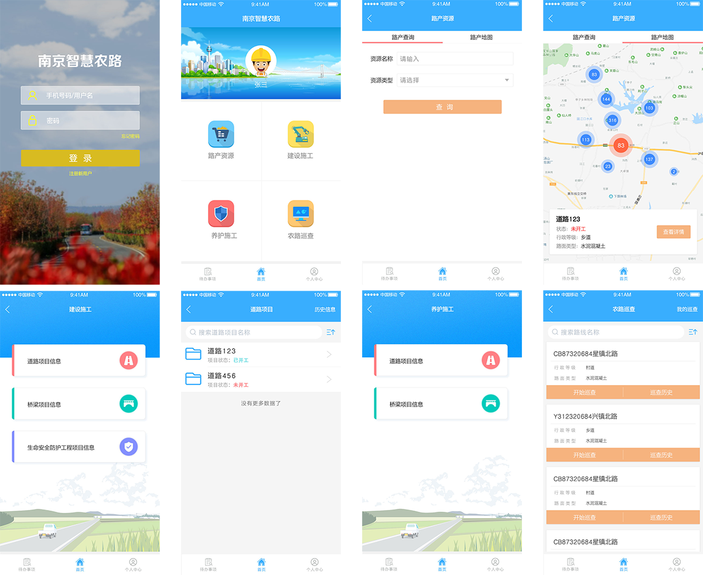

"四好农村路"智慧管理云平台
超级管理员
修改头像
个人资料
修改密码
信箱
安全退出
个性设置
待办事项
3
首页
路产管理
建设管理
养护管理
基础信息
消息管理
系统设置
大屏演示
路线管理
桥梁管理
隧道管理
涵洞管理
渡口管理
冶超站管理
交叉口管理
标识牌管理
建制村管理
加油站管理
计划管理
项目管理
日常养护
应急抢险
巡查监管
大中修管理
小修保养管理
定期检测管理
汇总统计
用户管理
角色管理
单位管理
计划编制
项目编制
报送审批
区级=》上报建设计划项目
地市=》审批建设计划项目
计划查询
道路项目查询
桥梁项目查询
生命安全防护查询
项目信息管理
道路工程项目
桥梁建设项目
生命安全防护工程项目
项目进度管理
道路工程项目进度
桥梁建设项目进度
生命安全防护工程项目进度
汇总统计
各类项目数量统计
各类项目总投资金额统计
道路工程项目
桥梁建设项目
生命安全防护工程
巡查计划
巡查计划
巡查报告
巡查报告
大中修计划
大中修计划管理
大中修计划
大中修计划上报
大中修工程管理
道路工程
桥梁工程
汇总统计
汇总统计
首页
关闭操作
定位当前选项卡
关闭全部选项卡
关闭其他选项卡
退出
行政区划
栖霞区
雨花台区
浦口区
江宁区
六合区
溧水区
高淳区
江北新区
公路行政等级里程
公路技术等级里程
行政等级公路桥梁
待办事项
项目资料审批
2019-01-10 10:12:40
道路工程项目资料上报
2019-01-10 09:50:39
大中修资料上报
2019-01-09 14:36:16
江宁区资料上报
2019-01-09 11:05:45
栖霞区道路计划上报
2018-12-17 18:12:26
大中修资料上报
2018-12-17 18:12:26
道路工程项目资料上报
2018-12-17 18:12:26
计划办理
2018-12-17 18:12:26
道路类型里程统计
近年公路里程增长
行政等级公路桥梁
桥梁技术情况
公路桥梁大小统计
首页
农路地图
数据大屏
APP展示
X
当前浏览器不支持 video直接播放



 首页
首页
 路产管理
路产管理 建设管理
建设管理
 养护管理
养护管理
 基础信息
基础信息 消息管理
消息管理
 系统设置
系统设置 大屏演示
大屏演示